Creating A Language Of Pictures =============================== --- How to describe Escher? =======================  --- # George 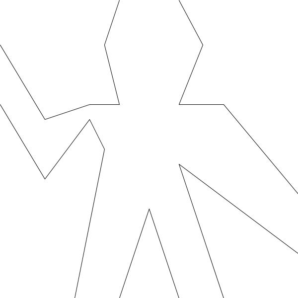 --- ```clojure (draw (beside george george)) ``` 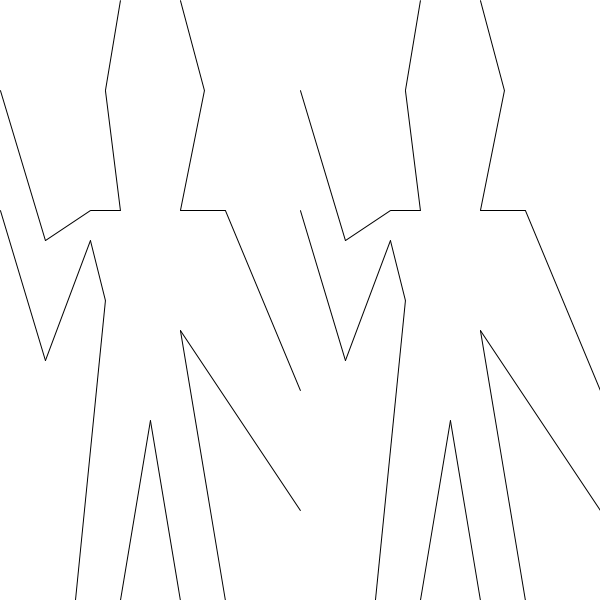 --- ```clojure (draw (beside george (flip-horiz george))) ``` 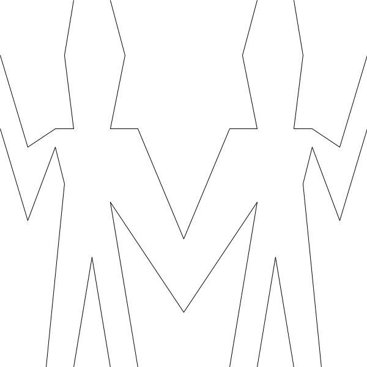 --- ```clojure (draw (below (beside george (flip-horiz george)) (beside george (flip-horiz george)))) ``` 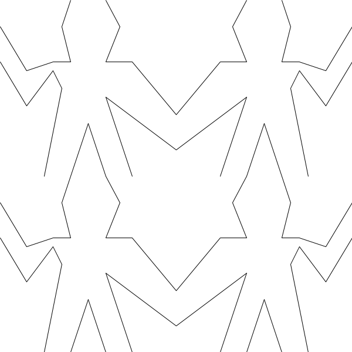 --- ```clojure (draw (rotate george)) ``` 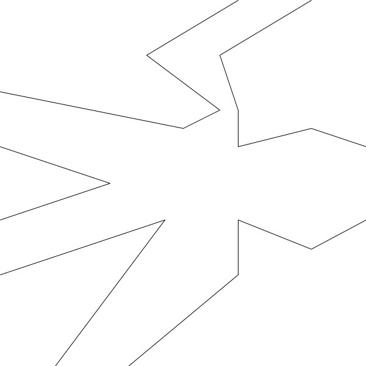 --- # New pictures from old ```clojure (defn rotate180 [p] (rotate (rotate p))) (defn rotate270 [p] (rotate (rotate (rotate p)))) (defn below [p] ; Define in terms of existing functions ) ``` --- ```clojure (defn right-split [p n] (if (= n 0) p (let [smaller (right-split p (dec n))] (beside p (below smaller smaller))))) ``` 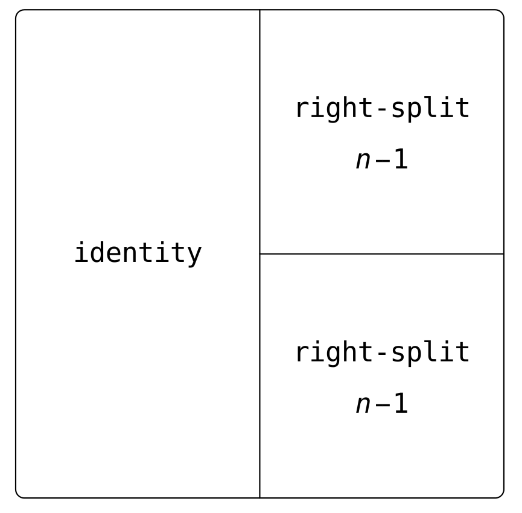 --- ```clojure (draw (right-split george 4)) ``` 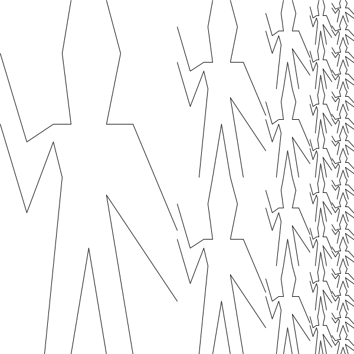 --- ```clojure (defn corner-split [p n] (if (= n 0) p (let [up (up-split p (dec n)) right (right-split p (dec n)) top-left (beside up up) bottom-right (below right right) corner (corner-split p (dec n))] (beside (below p top-left) (below bottom-right corner))))) ``` 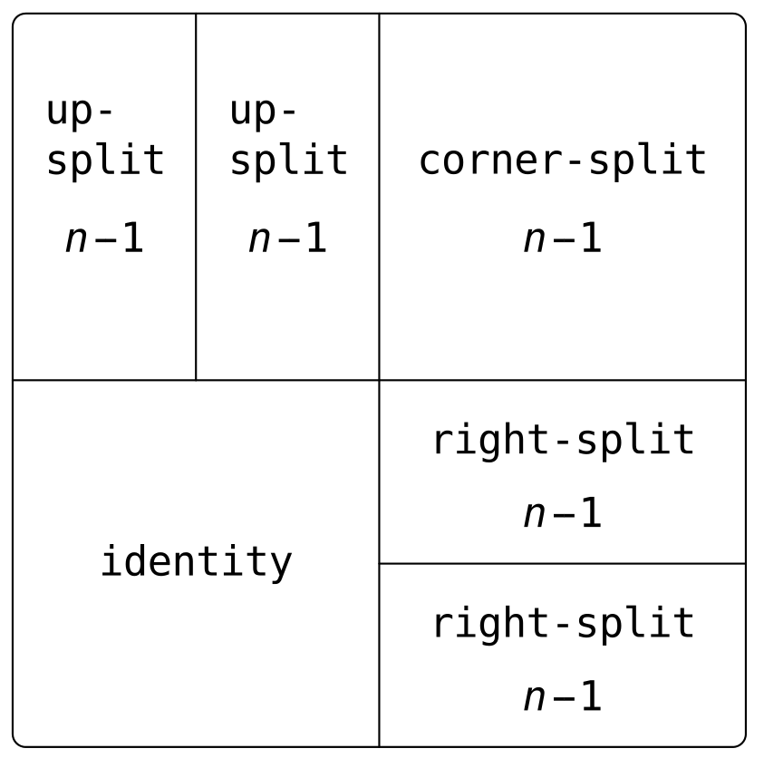 --- ```clojure (draw (corner-split george 4)) ``` 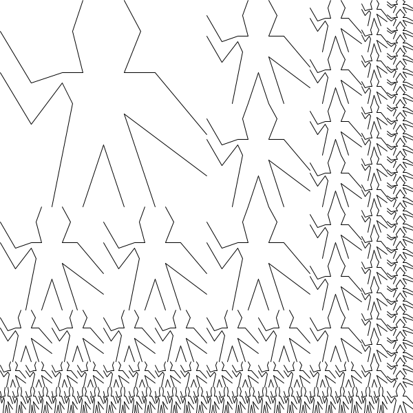 --- ```clojure (defn quartet [p1 p2 p3 p4] (below (beside p1 p2) (beside p3 p4))) ``` ```clojure (draw (quartet george box man bruce)) ``` 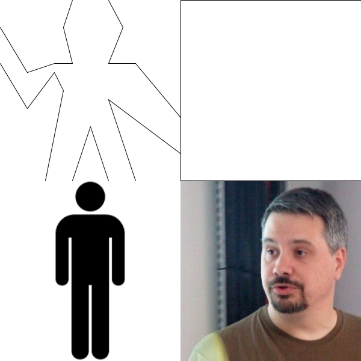 --- # Higher Order Procedures ```clojure (defn square-of-four [tl tr bl br] (fn [p] (let [top (beside (tl p) (tr p)) bottom (beside (bl p) (br p))] (below top bottom)))) ``` Takes 4 operations and returns a function of a picture that draws them in a square --- ```clojure (draw ((square-of-four identity flip-vert flip-horiz rotate) george)) ``` 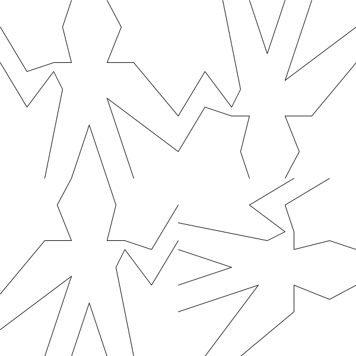 --- # We still don't know how to draw anything! --- # Quil ```clojure (q/defsketch escher :title "Escher" :draw draw-image :size [width height]) ``` Calls `draw-image` every second to update the picture --- Drawing lines ============= As we are using quil, `quil/draw` can be used in a few different ways ``` quil.core/line ([p1 p2] [x1 y1 x2 y2] [x1 y1 z1 x2 y2 z2]) Draws a line (a direct path between two points) to the screen. The version of line with four parameters draws the line in 2D. ... ``` We will be mostly calling it with 2 points --- # Vectors Using destructuring and Clojures vector type we define ``` (defn add-vec [[x1 y1] [x2 y2]] [(+ x1 x2) (+ y1 y2)] ) (defn sub-vec [[x1 y1] [x2 y2]] ; ... ) (defn scale-vec [[x y] s] ; ... ) ``` --- # Line segments Are just pairs of vectors ```clojure [[0 0] [1 1]] ``` --- # Paths A path is a sequence of line segments ```clojure (path [0 0] [1 1] [0 1] [0 0]) => (([0 0] [1 1]) ([1 1] [0 1]) ([0 1] [0 0])) (defn path [& veclist] ; COMPLETE ) ``` --- Data is code, Code is data ========================== --- A picture paints itself? ======================== A picture is a function that takes a "frame" as an argument and draws itself inside it. --- What is a frame? ================ 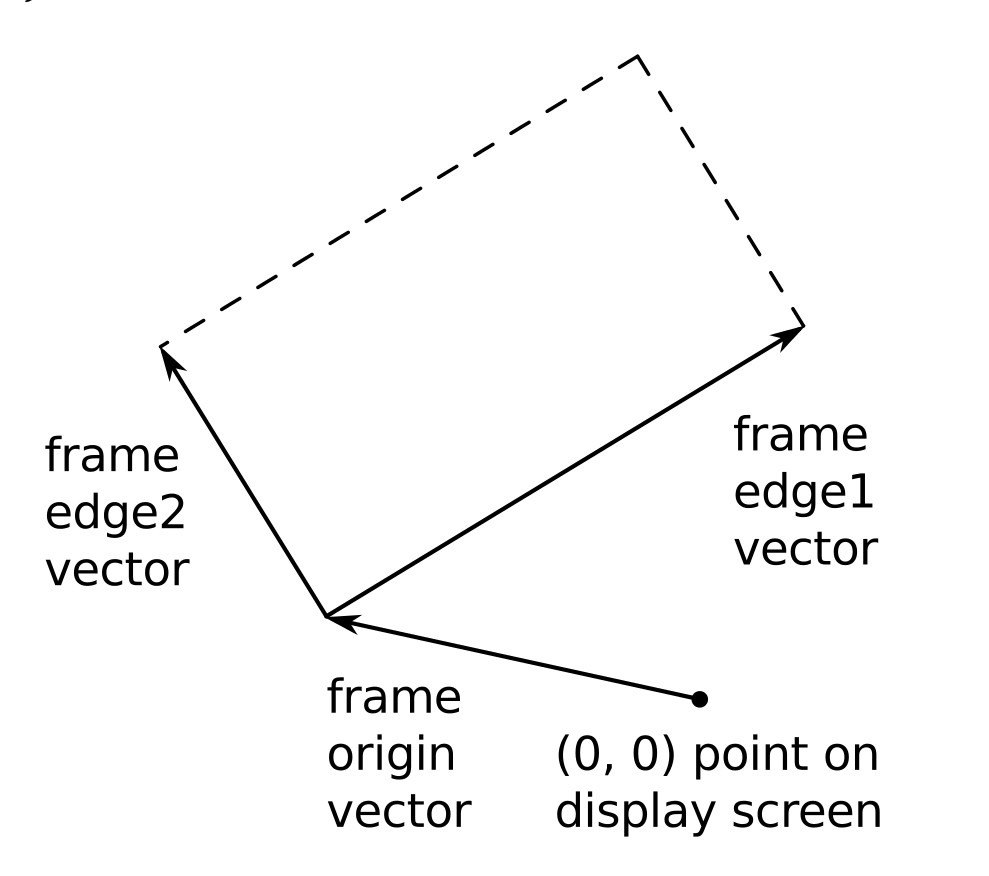 ```clojure {:origin [100 50] :e1 [300 100] :e2 [150 200]}) ``` --- Our first picture ================= ```clojure (defn frame-painter [{:keys [origin e1 e2]}] (let [corner (add-vec origin (add-vec e1 e2))] (draw-line origin (add-vec origin e1)) (draw-line origin (add-vec origin e2)) (draw-line (add-vec origin e2) corner) (draw-line (add-vec origin e1) corner))) (def frame1 {:origin [200 50] :e1 [200 100] :e2 [150 200]}) (def frame2 {:origin [50 50] :e1 [100 0] :e2 [0 200]}) ``` --- ``` (frame-painter frame1) (frame-painter frame2) ``` 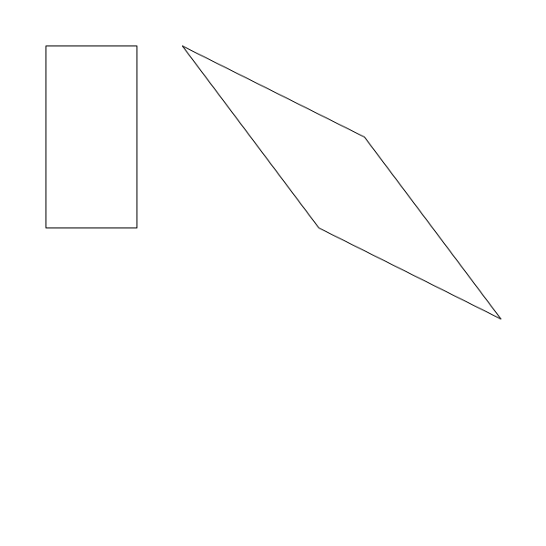 --- # Exercise Refactor add-vec to take more than to arguments and neaten up frame-painter --- # Segment painter ```clojure (defn segment-painter [segment-list] (fn [frame] (let [m (frame-coord-map frame)] (doseq [[start end] segment-list] (draw-line (m start) (m end)))))) (defn frame-coord-map [{:keys [origin e1 e2]}] (fn [[x y]] (add-vec origin (add-vec (scale-vec e1 x) (scale-vec e2 y))))) ``` --- ## What is frame-coord-map doing? ```clojure (def diag (segment-painter [[[0 0] [1 1]]])) (frame-painter frame1) (frame-painter frame2) (diag frame1) (diag frame2) ``` 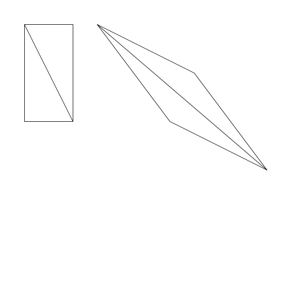 --- # Our draw function ```clojure (def whole-window {:origin [0 0] :e1 [width 0] :e2 [0 height]}) (defn draw [picture] (picture whole-window)) ``` --- ## Making new pictures from old ```clojure (defn transform-picture [p origin e1 e2] (fn [frame] (let [map (frame-coord-map frame) new-origin (map origin)] (p {:origin new-origin :e1 (sub-vec (map e1) new-origin) :e2 (sub-vec (map e2) new-origin)})))) ``` `transform-picture` * changes the origin * --- # flip- and rotate ```clojure (defn flip-vert [p] (transform-picture p [0 1] [1 1] [0 0])) (defn flip-horiz [p] ;; Ex 2.50 ) (defn rotate [p] ;; ... ) ``` --- # beside and below ```clojure (defn beside [p1 p2] (let [split [0.5 0] left (transform-picture p1 [0 0] split [0 1]) right (transform-picture p2 split [1 0] [0.5 1])] (fn [frame] (left frame) (right frame)))) (defn below [p1 p2] ; Ex 2.51 ) ``` --- # A different picture type --- # Drawing it ```clojure (def bruce (image-painter (q/load-image "data/bruce.jpg"))) (bruce frame1) (bruce frame2) ``` 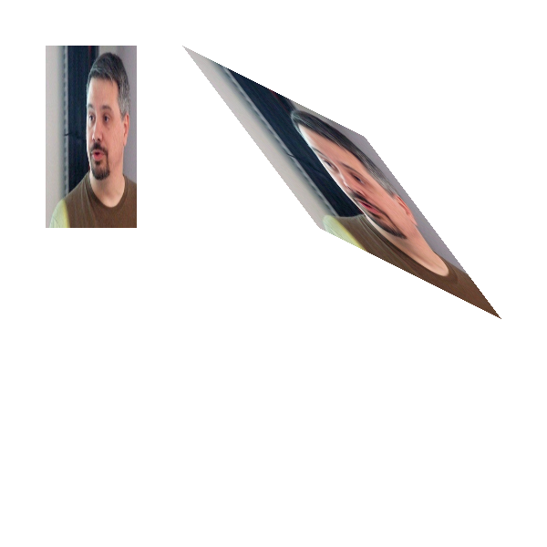 --- # Exercise: image-painter ``` (defn image-painter [img] (fn [{[ox oy] :origin [e1x e1y] :e1 [e2x e2y] :e2 }] (let [width (.width img) height (.height img)] ; COMPLETE ))) ``` See [the docs](http://quil.info/api/transform) for Quil transforms --- # Saving images Just call ```clojure (q/save "5.png") ``` inside the draw function --- ## Bruce-Finity! ```clojure (draw (square-limit bruce 4)) ``` 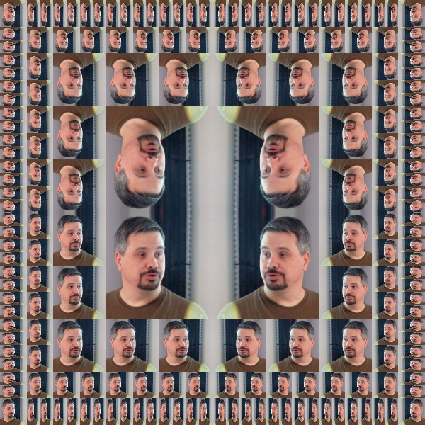 --- ## Escher ```clojure (draw (square-limit angels 4)) ``` 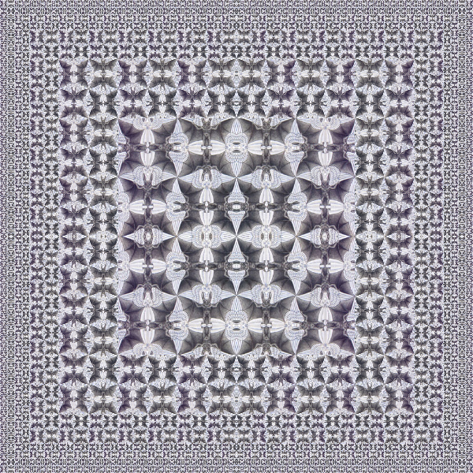 --- # References * Henderson's [wonderful paper](http://eprints.soton.ac.uk/257577/1/funcgeo2.pdf) * [Frank Buss](http://www.frank-buss.de/lisp/functional.html) (You might want to use his tiles and do a line-segment square-limit * [Escher In JS canvas](http://dl.acm.org/citation.cfm?id=1858597&dl=ACM&coll=DL) * [Geomlab](http://www.cs.ox.ac.uk/geomlab/home.html) Great intro to FP for kids based on these ideas * My [talk](https://skillsmatter.com/skillscasts/5488-escaping-dsl-hell-by-having-parenthesis-all-the-way-down) on DSLs (and my Geomlab in Clojure)